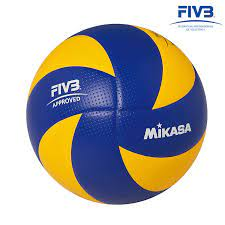

Hello world!!! Zdravo svete!!!! :)
Cao svima!
Dve liste
- jedan
- dva
- tri
- crvena boja
- plava boja
- svetlo plava
- tamno plava
- teget
- bela boja


lopta geometrijsko telo
kliknite ovde i otvorite politiku u novom tabu
prvi paragraf
divisn
iskosena slova
novi paragraf
malo kombinovanja
centriranje teksta na stranici
- kafa
- sok
- pivo
klikni na loptu
kliknite ovde da biste posetili drugi fajl